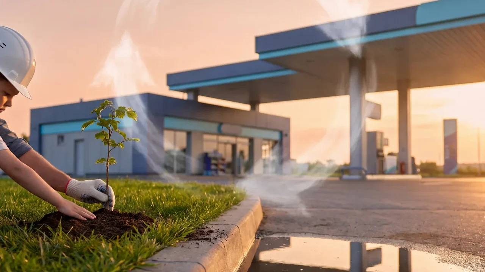

תחנת דלק היא אחד האתרים הרגישים ביותר מבחינה סביבתית בעיר. מתחת לרחבה שנראית כמו עוד מגרש אספלט מאוחסנים עשרות אלפי ליטרים של דלק, במרחק של מטרים ספורים מהקרקע, מהניקוז העירוני ולפעמים ממי התהום. דליפה קטנה שלא מתגלה בזמן יכולה לזהם קרקע ומים לשנים, לעלות מיליוני שקלים בטיהור ולסגור את התחנה. לכן הרגולציה הסביבתית סביב תחנות דלק היא מהמחמירות בענף הבנייה, והיא משפיעה על כמעט כל החלטה תכנונית: איזה מיכלים, איזו צנרת, איך מרצפים ואיזה ציוד מותקן על המשאבות.
המאמר בנוי משני חלקים: קודם מה דורשת הרגולציה ואיך כל מערכת הגנה עובדת, ואחר כך איך אנחנו בש. גוטובסקי מיישמים את זה בפועל בכל תחנה שאנחנו מקימים או משפצים, מאז 1972.
חלק א׳: שני סוגי זיהום, שתי מערכות הגנה
הסיכונים הסביבתיים בתחנת דלק מתחלקים לשניים, ולכל אחד מהם מערכת הגנה משלו:
- זיהום אוויר: אדי דלק שמשתחררים בזמן פריקת מכלית למיכל ובזמן תדלוק הרכב. האדים מכילים תרכובות אורגניות נדיפות, ובהן בנזן, שהוא חומר מסרטן. בריכוז גבוה זהו מפגע בריאותי לעובדים וללקוחות.
- זיהום קרקע ומי תהום: דלק שדולף ממיכל, מצנרת, משוחת מילוי או מרחבה סדוקה מחלחל לקרקע. בקרקע חולית, כמו ברוב מישור החוף, הוא מגיע למי התהום מהר.
מישוב אדים: Stage I ו-Stage II
מערכות מישוב אדים לוכדות את האדים ומחזירות אותם למיכל במקום לשחרר אותם לאוויר:
- Stage I, מישוב במילוי המיכלים: כשמכלית פורקת דלק למיכל התת־קרקעי, האדים שנדחקים מהמיכל מוחזרים בצינור ייעודי למכלית. הדרישה חלה על המיכלים, על נקודות המילוי ועל צנרת האדים.
- Stage II, מישוב בתדלוק: בזמן תדלוק הרכב, האדים שנדחקים ממיכל הרכב נשאבים דרך האקדח וצנרת האדים חזרה למיכל התת־קרקעי. זה דורש אקדחים ייעודיים, משאבות עם יחידת ואקום וצנרת אדים נפרדת מהמשאבה ועד המיכל.
מבחינת הביצוע, Stage II פירושו תוואי צנרת נוסף שצריך לתכנן ולהניח יחד עם צנרת הדלק, ובדיקות יעילות תקופתיות למערכת. בשיפוץ תחנה ותיקה, השדרוג ל-Stage II הוא לעיתים קרובות הסיבה לפתיחת הרחבה.
מיכלים בדופן כפולה
מיכל בדופן כפולה בנוי משתי דפנות עם חלל ביניהן. דליפה מהדופן הפנימית נעצרת בדופן החיצונית, וחיישן בחלל הביניים מתריע לפני שטיפה אחת מגיעה לקרקע. זהו הסטנדרט למיכלים חדשים, ולרוב גם הדרישה בהחלפת מיכלים ישנים.
צנרת בדופן כפולה וגילוי דליפות
אותו עיקרון חל על הצנרת: צינור בתוך צינור, עם ניקוז או ניטור של החלל שביניהם לנקודת גילוי. חיבורי הצנרת נעשים בתוך שוחות אטומות מתחת למשאבות ומעל המיכלים, כך שגם דליפה בחיבור נאספת ומזוהה.
ניטור מיכלים ומאזן דלק
מערכת ניטור אלקטרונית עוקבת אחרי מפלס הדלק במיכלים ומשווה בין הכמות שנכנסה, הכמות שנמכרה והכמות שנשארה. פער עקבי הוא אינדיקציה לדליפה, גם כשהחיישנים לא הופעלו. במקומות רגישים נדרשים גם קידוחי ניטור סביב בור המיכלים.
ריצוף אטום ומפריד שמן ודלק
רחבת התדלוק ואזור המילוי חייבים להיות משטח אטום, בדרך כלל בטון מזוין, עם שיפועים שמובילים כל נוזל לתעלות איסוף ומשם למפריד שמן ודלק. המפריד מפריד את הדלק והשמן מהמים לפני שהמים ממשיכים למערכת הניקוז. ריצוף לא אטום או שיפועים שגויים הם מהליקויים הנפוצים בביקורות.
סיכום הדרישות והשפעתן על הביצוע
| דרישה | השפעה על הביצוע |
|---|---|
| מישוב אדים Stage II | צנרת אדים נוספת, משאבות ואקדחים מתאימים, בדיקות יעילות |
| מיכלים בדופן כפולה | בור מיכלים מדויק, עיגון, חיישני חלל ביניים, בדיקת אטימות לפני כיסוי |
| צנרת בדופן כפולה | שוחות אטומות מתחת למשאבות, בדיקות לחץ מתועדות, גילוי דליפות |
| ריצוף אטום | בטון מזוין עם שיפועים מחושבים, תעלות איסוף, מפריד שמן ודלק |
| ניטור ובקרה | מערכת ניהול מיכלים, תיעוד מאזני דלק, לעיתים קידוחי ניטור |
חלק ב׳: איך אנחנו שומרים על איכות הסביבה בכל פרויקט
עבורנו, שמירה על הסביבה אינה סעיף בהצעת המחיר אלא הדרך שבה תחנה נבנית נכון. כך העקרונות שלמעלה נראים בשטח, בפרויקטים שלנו:
1. מיכלים וצנרת בדופן כפולה, מהיום הראשון
כל מיכל תת־קרקעי שאנחנו מניחים הוא מיכל בדופן כפולה, וכל קו דלק עובר בתוך צינור מעטפת עם נקודות חיבור בתוך שוחות אטומות. בתחנת נובר באשדוד, למשל, הנחנו צנרת פיברגלאס להולכת דלק ומערכת מילוי בדופן כפולה כחלק מההקמה מחדש של התחנה.
2. שוחות אטומות ושוקת מילוי תקנית
נקודות המילוי, המשאבות הטבולות וחיבורי הצנרת יושבים בתוך שוחות אטומות שאוספות כל נזילה. שוקת המילוי שמתחת לפתח פריקת המכלית בנויה לקלוט את מה שנשפך בזמן חיבור וניתוק הצינור, בהתאם לדרישת "5 גלון" של התקן. בתחנת גל הראשונים באשדוד אנחנו מתקינים שוחות מלבניות שמונעות דליפת דלק לקרקע כחלק משיפוץ התחנה.
3. צנרת מישוב אדים חדשה
אנחנו מתקינים צנרת מישוב Stage II גם בהקמות וגם בשדרוגים של תחנות קיימות. זו דרישה סביבתית, אבל גם בריאותית: העובדים בתחנה נושמים את האוויר הזה כל היום.
4. תעלות ניקוז ומפרידי דלק
גשם ושטיפה של הרחבה סוחפים שאריות דלק ושמן. במקום שהם יזרמו לניקוז העירוני, הרחבה מנוקזת דרך תעלות אל מפריד דלק ושמן. בתחנת חצי חינם בחולון בנינו תעלות ניקוז לתשטיפים והתקנו מפריד דלקים כחלק מההקמה מחדש.
5. הגנה קתודית וחשמל סטטי
מיכלי פלדה תת־קרקעיים נשחקים בקורוזיה לאורך השנים, ומיכל שנשחק הוא מיכל שידלוף. מערכת הגנה קתודית מאטה את התהליך הזה משמעותית, ומערכות הארקה למניעת חשמל סטטי מונעות ניצוץ בזמן פריקת דלק. שתי המערכות הן חלק קבוע מכל תחנה שאנחנו מוסרים.
6. בדיקות לחץ ואטימות מתועדות
לפני שהרחבה נסגרת ביציקה, כל קטע צנרת וכל מיכל עוברים בדיקת לחץ ואטימות, והתוצאות מתועדות ונמסרות ללקוח. זה השלב שבו מגלים כל פגם כשעוד אפשר לתקן אותו בזול, לפני שהוא הופך לדליפה מתחת לבטון.
7. טיפול בקרקע מזוהמת מהעבר
בשיפוץ של תחנה ותיקה אנחנו לפעמים פוגשים את התוצאה של עשרות שנים בלי התקנים האלה: קרקע ספוגת דלק מסביב למיכלים הישנים. במקרה כזה הקרקע המזוהמת נחפרת ומפונה לאתר מורשה לטיפול בקרקעות מזוהמות, ובמקומה מונחת קרקע נקייה. כך עשינו בשיפוץ תחנת דור אלון באילות, שם גם פירקנו שוחות שקרסו מעל המיכלים ובנינו שוחות בטון חדשות לפי תקני המשרד להגנת הסביבה.
8. אתר עבודה שלא פוגע בסביבה
- פסולת ושאריות דלק מהמיכלים והצנרת הישנים מפונות בצורה מבוקרת, לא לפח הבניין.
- גידור והפרדה בין אזור העבודה לבין העמדות שממשיכות לפעול, כך שהלקוחות והעובדים לא נחשפים לחפירה הפתוחה.
- אבק ורעש נשלטים בשלביות העבודה ובשעות ביצוע מתואמות עם התחנה, במיוחד באזורי מגורים.
- צוותים קבועים שעברו הכשרות בטיחות ומכירים את הדרישות של חברות הדלק ושל הרשויות.
שדרוג תחנה ותיקה בלי לסגור אותה
בשיפוץ תחנה ותיקה השאלה המרכזית היא סדר העבודה: איך להחליף מיכלים, צנרת וריצוף כשהתחנה ממשיכה למכור דלק. תכנון שלבי נכון, שבו חלק מהעמדות נשאר פעיל בכל שלב, הוא ההבדל בין השבתה של ימים להשבתה של שבועות. רוב השדרוגים שלנו מתבצעים כך, בתחנות פעילות.
למה זה משתלם גם לבעל התחנה
מעבר לחובה החוקית, תחנה שנבנתה לפי הסטנדרט הסביבתי היא תחנה זולה יותר לאורך זמן. היא לא נסגרת בגלל ממצא של זיהום, לא נדרשת לטיהור קרקע יקר, מקבלת ומחדשת רישיון עסק בלי עיכובים, ומחזיקה מעמד עשרות שנים בלי לפתוח את הרחבה שוב. חברות הדלק הגדולות דורשות את זה מכל קבלן שעובד איתן, וזו הסיבה שאנחנו עובדים לצדן כבר שנים.
שאלות נפוצות
האם כל תחנה חייבת Stage II?
הדרישה חלה בהתאם לתקנות ולתנאי רישיון העסק, ובדרך כלל תלויה בהיקף המכירות של בנזין בתחנה. בתחנות חדשות נהוג לתכנן את המערכת מראש גם כשהסף עדיין לא הושג, כי הוספה מאוחרת יקרה בהרבה.
מה קורה כשמתגלה דליפה בתחנה קיימת?
יש לדווח לגורמים המוסמכים, לעצור את השימוש במיכל או בקו הרלוונטי ולבצע סקר קרקע. בהתאם לממצאים נדרש שיקום קרקע, שיכול לכלול חפירה ופינוי קרקע מזוהמת לאתר מורשה והחלפת התשתית.
האם אפשר להשאיר מיכל ישן חד־קירי?
זה תלוי בגיל המיכל, במצבו ובדרישות שחלות על התחנה. ברוב המקרים, כשפותחים את הרחבה לצורך שדרוג, משתלם להחליף את המיכלים לדופן כפולה ולסגור את הנושא לעשרות שנים.
האם אפשר לשדרג תחנה לתקנים הסביבתיים בלי לסגור אותה?
כן. העבודה מתבצעת בשלבים, כל אזור עבודה מגודר, וחלק מעמדות התדלוק ממשיכות לפעול לאורך כל הפרויקט.
מתכננים שדרוג סביבתי לתחנה, או הקמה של תחנה חדשה? דברו איתנו, נשמח לעבור על התוכניות ולהצביע על מה שחשוב לעשות נכון מהיום הראשון.